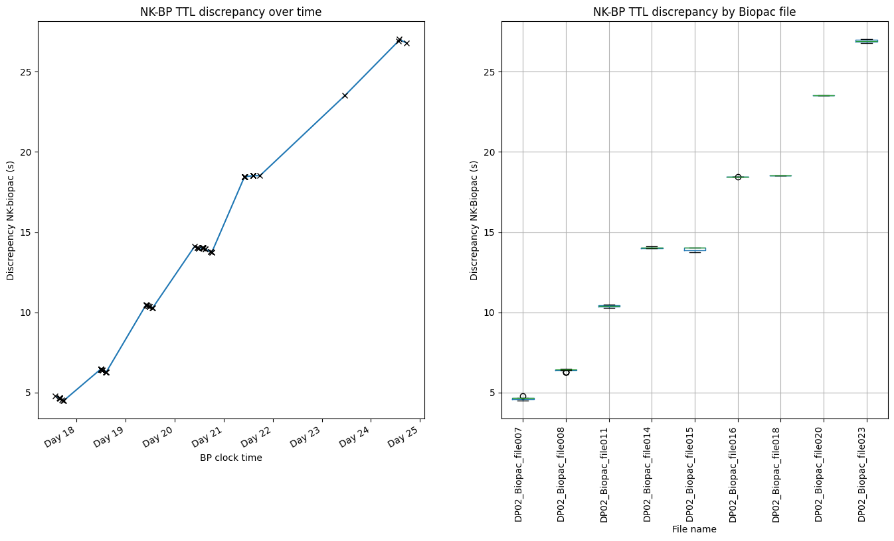
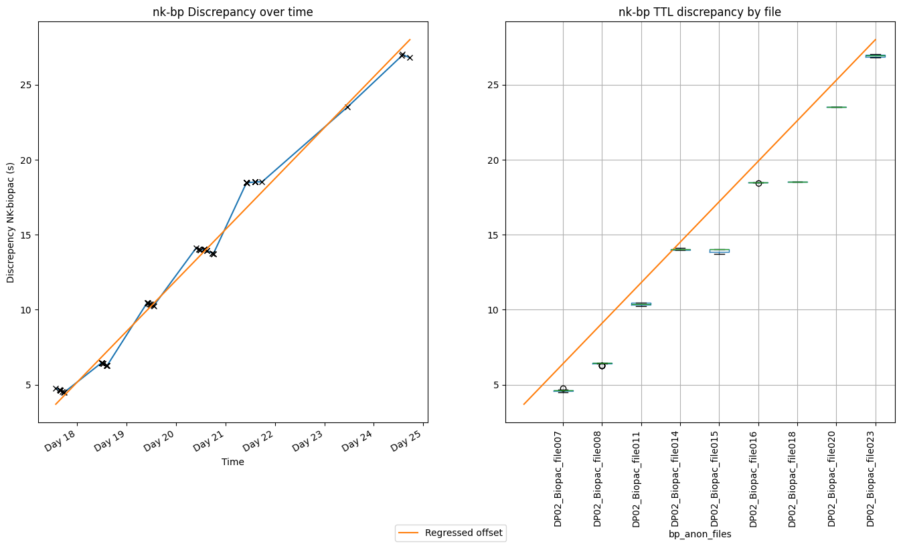

DP02 - Biopac & NK Synchronisation Analysis
Problem
- Peripheral physiology data collected using Biopac MP160 + BioNomadix amplifier modules + AMI100D I/O at 2kHz sampling (NIST internet time)
- Neural data collected using Nihon Kohden Neurofax EEG-1200 system at 2kHz or 10kHz sampling (own internal clock)
- Behavioural data was collected using online surveys (NIST internet time)
While collected in parallel, offline analysis required matching timestamps. A 5V TTL pulse was sent to both systems via MATLAB interfacing Blackbox Toolkit USB-TTL module, and used to align data streams
This page demonstrates the synchronisation process between Biopac and NK (iEEG) data streams.
1. Pre-Synchronisation Timeline
Original Timeline - Before Synchronisation Correction
Hover, click and pan above to see the timestamps of the files and TTLs.
What you're seeing:
- Extensive dataset with 1500+ files spanning multiple recording days
- TTLs appearing at different times in the Biopac and NK streams
- Multi-day recording sessions with varying session lengths
- Behavioural rating schedules interspersed throughout
2. Discrepancy Analysis

Synchronisation Methodology
To quantify the synchronisation problem, we analysed the time discrepancies between TTL pulses in both systems:
- TTL Extraction: Extract TTL timestamps from both Biopac and iEEG systems
- Discrepancy Calculation:
discrepancy = nk_timestamp - bp_timestamp across all files
- Linear Regression:
offset = m × time_since_start + b
- Offset Correction: Apply calculated offset correction to Biopac timestamps per file

3. Post-Synchronisation Timeline
Corrected Timeline - After Synchronisation Correction
What changed: The post-sync timeline shows the same data with corrected Biopac timestamps. The TTL markers from both systems now align much more closely, all within 1 second of each other across the entire multi-day recording period.